0.准备工作：IIS6.0镜像包，自制的网页文件夹（路径不能是桌面，否则其他电脑将因为没有权限访问系统桌面而不能访问你的网页）
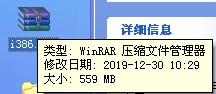
1.进入添加或删除程序，勾上Internet信息服务（IIS），点击下一步，将文件路径选择为IIS6.0解压后文件（需要确认多次，请等待），安装完成。
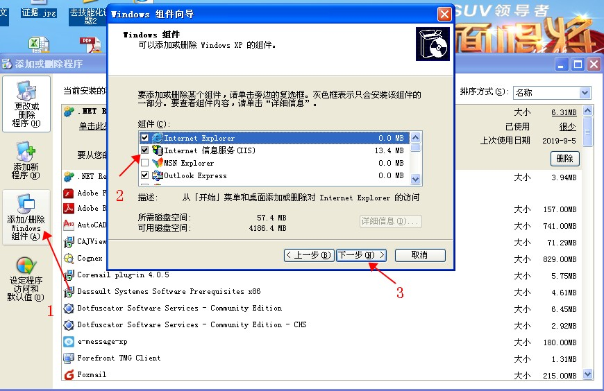
2.在管理工具中找到刚刚安装的Internet信息服务，打开。
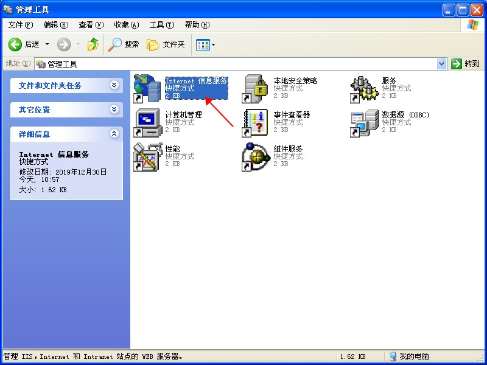
3.在默认网站上点击右键，打开属性
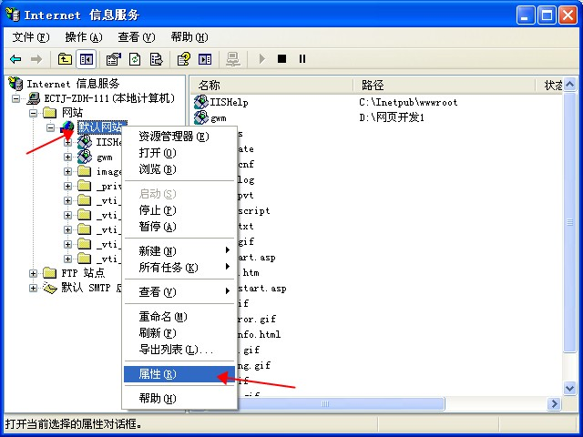
4.点击主目录选项卡，点击浏览按钮，将路径指向你开发的网页文件夹（注意不能是桌面）
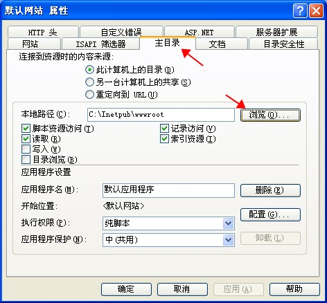
5.选择文档选项卡，添加常用文档名称（必须包含你开发的网页名称）
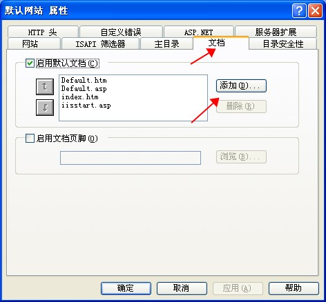
6.点击目录安全性，点击编辑
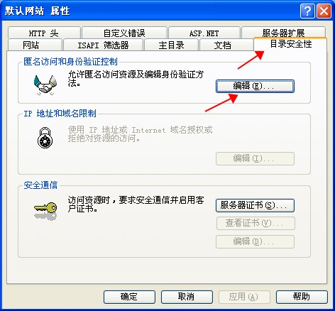
7.勾选匿名访问，点击浏览按钮
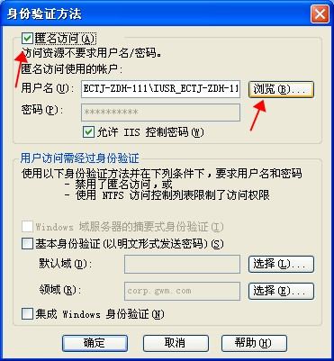
8.点击高级
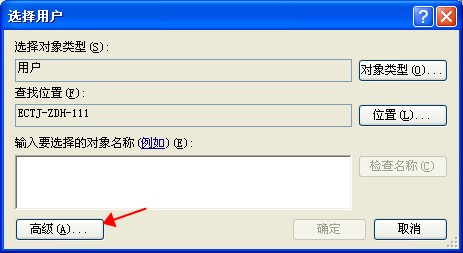
9.点击立即查找，在下方对话框里，选择IUSER用户，并确认
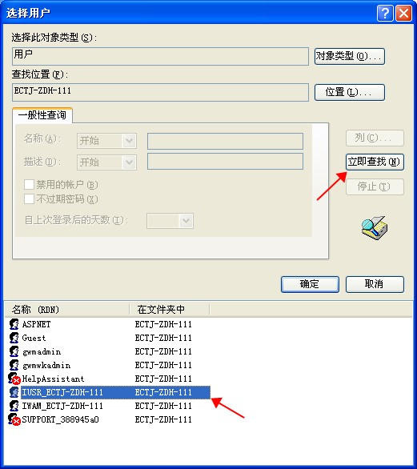
10.至此，设置就基本结束了，选中默认网站后，点击停止/启动，并右键刷新，保证配置正确应用。
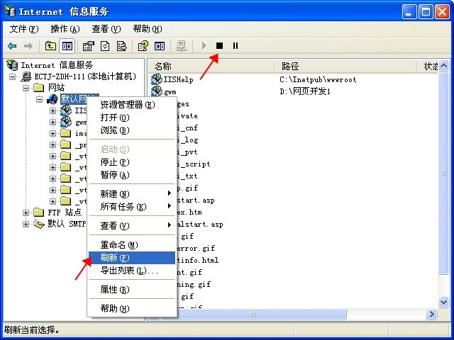
11.默认网站上可以通过右键-》浏览，来确认网页是否能够发布
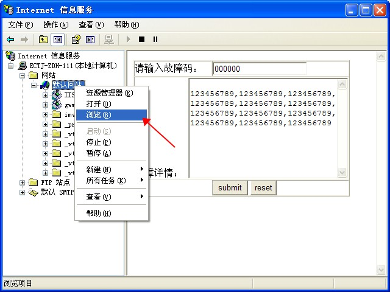
12.问题整理